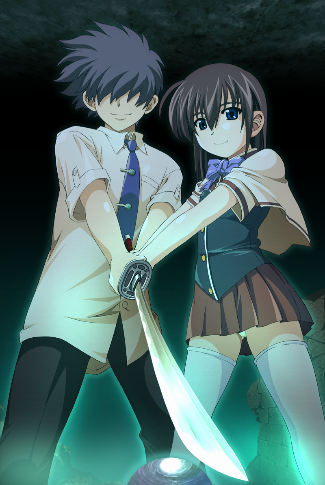

I'm back, bitch.
*ahem*
*adjusts tie*
If you don't mind, I think I'll be going on an utterly deranged ramble today.
It's been a long time coming.
I fucking love anime girls!
There. I said it in the cringiest way possible. Fuck you, me.
*Bats you away with my giant hammer and screeches like a horrific hell creature at the top of my lungs.*
I enjoy finding meaning by navigating *within* the hell systems and finding myself in its reflections!
And I just so happen to find comfort and meaning by finding myself in the reflections of the patriarchal man and woman!
And that's fine actually! Fuck you!
*Runs around and rips up everything in the room with my teeth*
Turns out that finding myself through constant and exclusive rejection of the world is miserable and suffocating actually, who would've thought.
Gotta find a healthy balance here. Gotta become the type of totally depraved queer freak that's a feminist transwoman and a depraved otaku! Piss off everybody!
*Yells once more at the top of my lungs into the void.*
Well I feel better now.
